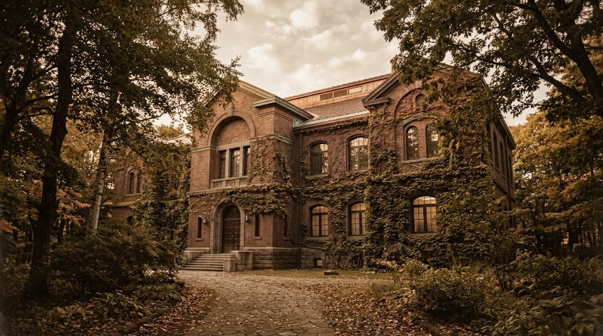
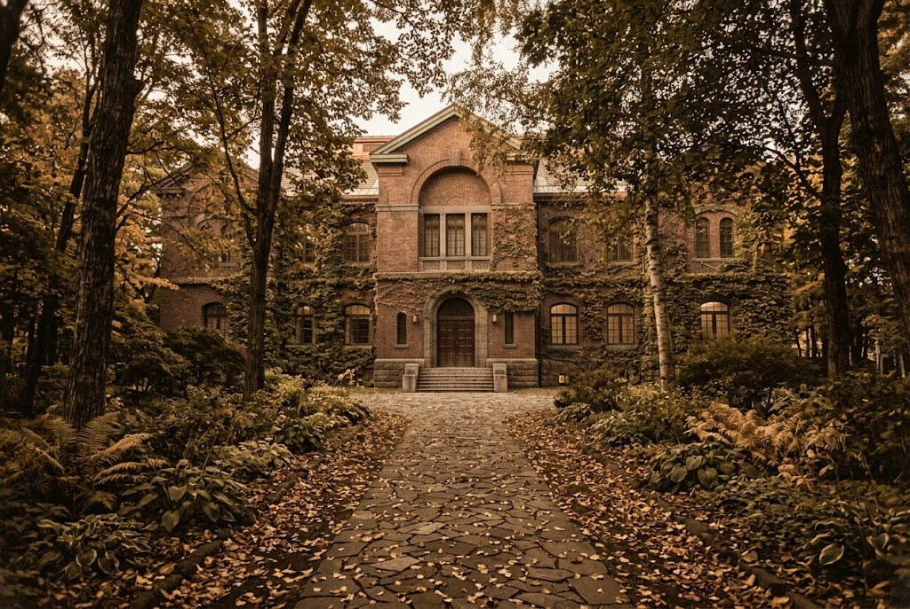
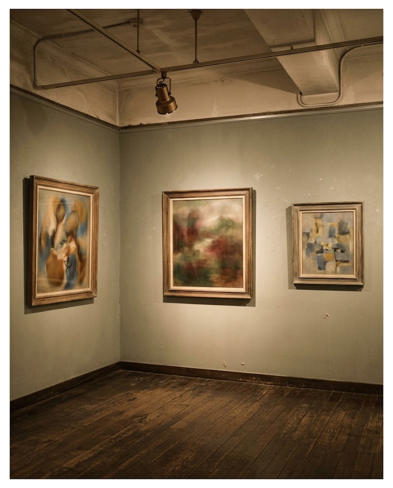
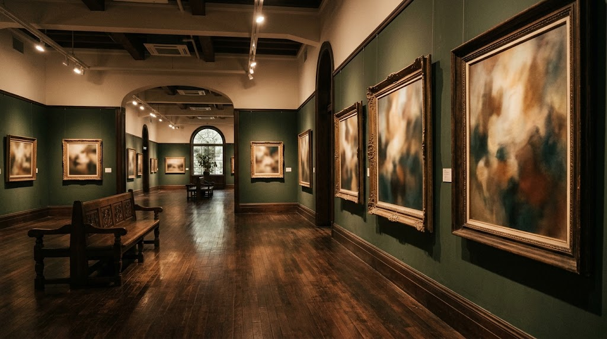

北の大地に息づく、美のあつまり
札幌 1970年設立
北海道ゆかりの芸術家の作品を中心に、
国内外の近現代美術を体系的に収集・展示。
地域性と国際性を、ひとつの館に。
北海道にゆかりのある作家たちの作品を軸に、国内外の優れた近現代美術までを幅広く所蔵する、札幌の美術館です。
常設展では、この地で育まれた表現にじっくりと向き合うことができます。季節ごとの特別展とあわせて、ゆっくりとお過ごしください。

戦後、芸術振興の機運が高まるなか、札幌市が1960年代に進めていた市立美術館の計画は、北海道の「美術館構想」と合流しました。
そうして1970年、北海道立近代美術館が誕生しました。以来、この地の芸術を守り、伝え続けています。

この土地で生まれ、あるいは暮らし、描いた作家たちの作品が充実しています。

展示室の様子
本音で。【#歌川国芳展、中身が圧倒的に濃かった。1800円以上の価値が圧倒的にある】一枚一枚の絵と向き合うと、江戸時代に戻れて、その時代感だけではなく、着物の柄からアイデア、構図まで圧倒的何卒世界観がある。現在のNHKの朝ドラ#蔦屋重三郎をじっくり見ている方にとっては、蔦重から始まった江戸の粋がその後どう繋がって具現化していくのか、どんな絵柄になって後の世に残っていくのか、また流布していくのか。いろんな想いが複雑に交錯しながら一品一品眺めるのはとてもとても楽しい。素晴らしい展覧会だった。30年ぶりの#道立近代美術館。ありがとうございました。ツタも増えて、木々も大きく育ち素晴らしい懐かしい場所でありました。感謝感謝感謝であります。ありがとう。
常設510円 フラッシュ無しなら撮影OKでした。（要確認） 良い展示でした。 早めの時間だったからか 特別展示の方は人が並んでるいました。 それと 笑 グッズ販売のレジの人達はもう少し頑張らないと お釣、3回間違えてました。
※ 口コミは来館者の投稿です。